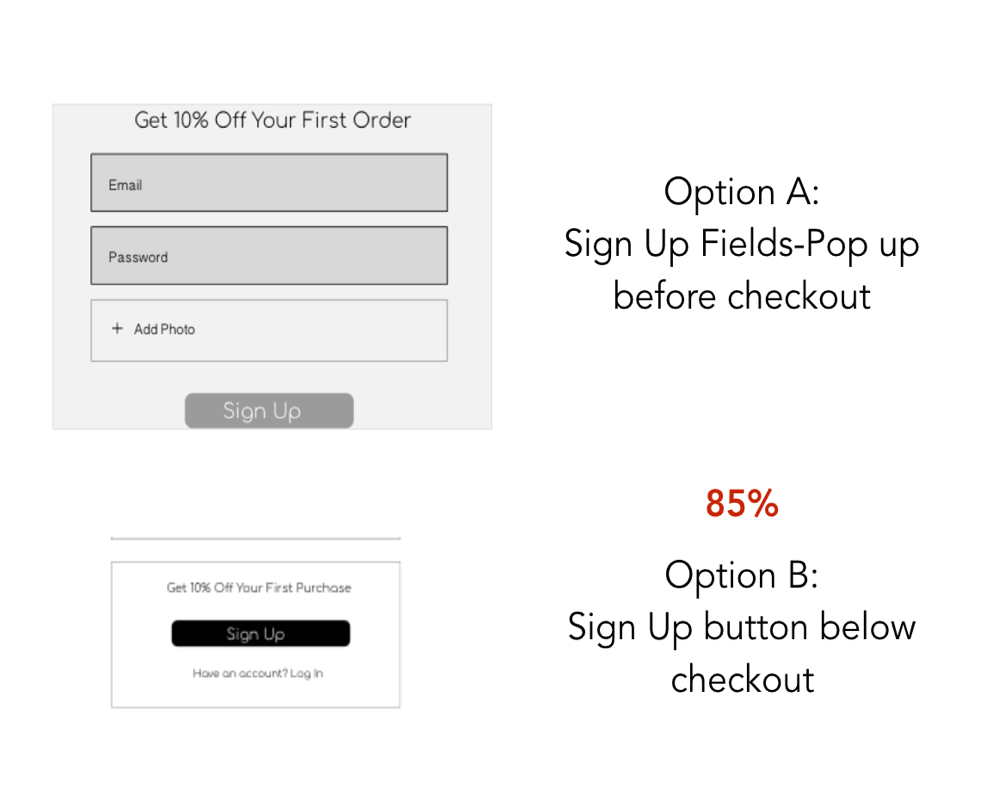

Research | Branding | Testing | Prototype
At the Playground, you can find the perfect lipstick shade for your skintone. Each shade includes undertone details making it easy for anyone to color match.
Browsing makeup can be fun but frustrating when you can’t find a shade that works for you. Even with so many products to choose from, it's difficult to find that perfect complimentary shade.
The Playground is a responsive platform allowing users to find unique lipstick shades with undertone details. These details include skintone descriptions and recommendations for both beginner and expert makeup users.
To better understand the makeup user, I conduted a survey to learn more about the shopping habits of makeup consumers. With 50 respondants, below are the main findings:
 90% Choose lipsticks as their favorite products
90% Choose lipsticks as their favorite products
 85% Prefer Formula over brand or price
85% Prefer Formula over brand or price
 75% Stated products don't match their skintone
75% Stated products don't match their skintone
Based on these survey results, it was clear many users loved lipsticks but were frustrated by color matching. To further understand this issue, I interviewed three potential users:
Vilet Brooks

27 / Seattle / Stylist
Motivations
As a fashion stylist, Vilet is always looking for beauty inspiration. Vilet enjoys bright lipsticks to compliment her sense of style and is an avid instagram scroller
Frustrations
Nicole Lewis

31 / San Francisco / Nurse
Motivations
With her busy and social lifestyle, Nicole reaches for her power lipsticks between patients and happy hours. Nicole tends to go for every day shades or bold reds.
Frustrations
Vilet Brooks

24 / San Francisco / Designer
Motivations
A free spirit and artist, Sherry enjoys makeup tutorials and reading beauty blogs. She enjoys trying new shades, but can’t has difficulty color matching.
Frustrations
After getting to know the users, a competitive analysis was completed to learn more about the current solutions already out there. Below are three brands that offer some form of lipstick customization and solve the user’s frustrations. Respondants were asked to review these competitors and let me know their thoughts on ease of use and color matching.

At Bite Beauty, users can search and purchase lipsticks or create their own at the bite beauty bar.
Users Liked:
Users Disliked:

Giella lets users choose their lipstick shade, finish, and scent.
Users Liked:
Users Disliked:

CC Specialists recreate discontinued lipsticks for users who can’t find the shades they liked before.
Users Liked:
Users Disliked:
View Full SWOT Analysis
Based on research and analysis, users clearly showed a need for unique lipsticks that matched their skintone, without feeling confused when browsing. Keeping this in mind, I created a three step process for selecting a lipstick to ensure ease when browsing and checking out.


View All User Flows
When creating the Playground identity, it was important to showcase lipstick formula that catered to a diverse audience. It was also important to incorporate the lipstick habits of users. I started basic mind map to help inspire this identity concept.

The term “swatch” and “play” stood out amongst lipstick users as they conveyed a fun and common way to explore makeup. Users will swatch lipsticks to see if it matches their skintone and play with different shades. Thus, the name Playground resulted as the MVP for this design.

To showcase what the Playground it about, it was important for the logos to incoporate a lipstick or a swatch. After conducting preference tests, options 2 and 3 appealed the most to users, so a combination of the two seemed best suited for this design.
To further develop the visual design, colors and type were chosen to emphasize lipstick luxury for diverse women. When surveyed on shopping habits, most users stated “red” and “nude” as the hardest shades to find and color match. This opened up a branding opportunity to incorporate the undertones of red or nude shades into the design, to better relate to users. Using burgundys, deep pinks, gold, and beige, these colors help convey luxury, ease, and of course lipsticks. As for type, the font Comfortaa, is an open and rouded type that is playful, wide and easy to read. Comfortaa combined with Oriya Sangam, another sans serif font, creates a sense of ease and readability for the user. The user can then focus on the playful aspect of lipstick browsing.

Before applying any visual color, wireframes were created so users can actually test out the Playground in the making. I spoke with users to understand what they expect the application to do and how they prefered to interact with it. Taking this user feedback, I applied these changes throughout the wireframe process.


View All Wireframes
Along with talking to users and understanding their expectations, I also conducted various preference and navigation tests to ensure the easy page flows. Each test was disributed via email, social media, and other online forums as well as in person interviews. With a focus on customization, check out, sign up and writing a review, below are the results of the user tests:
Customize Finish

View Bag Options
Sign Up
View Product Details
Sign Up & Checkout Process Feedback:
Write Review Feedback:
After continous revisions, the prototype was given to users to interact with. Overall, users enjoyed their experience at the Playground and were able to browse lipsticks and checkout easily. The Playground helps solve a real life problem for many women of different skintones, including myself, who want to feel confident and wear shades that work for them. There is definitly a shift in the beauty industry as more products come out catered to diverse women. Of course, no design is ever fully completed, so I would like to further develop this product and continue creating a better user experience. View the full visual prototype by clicking the button below: